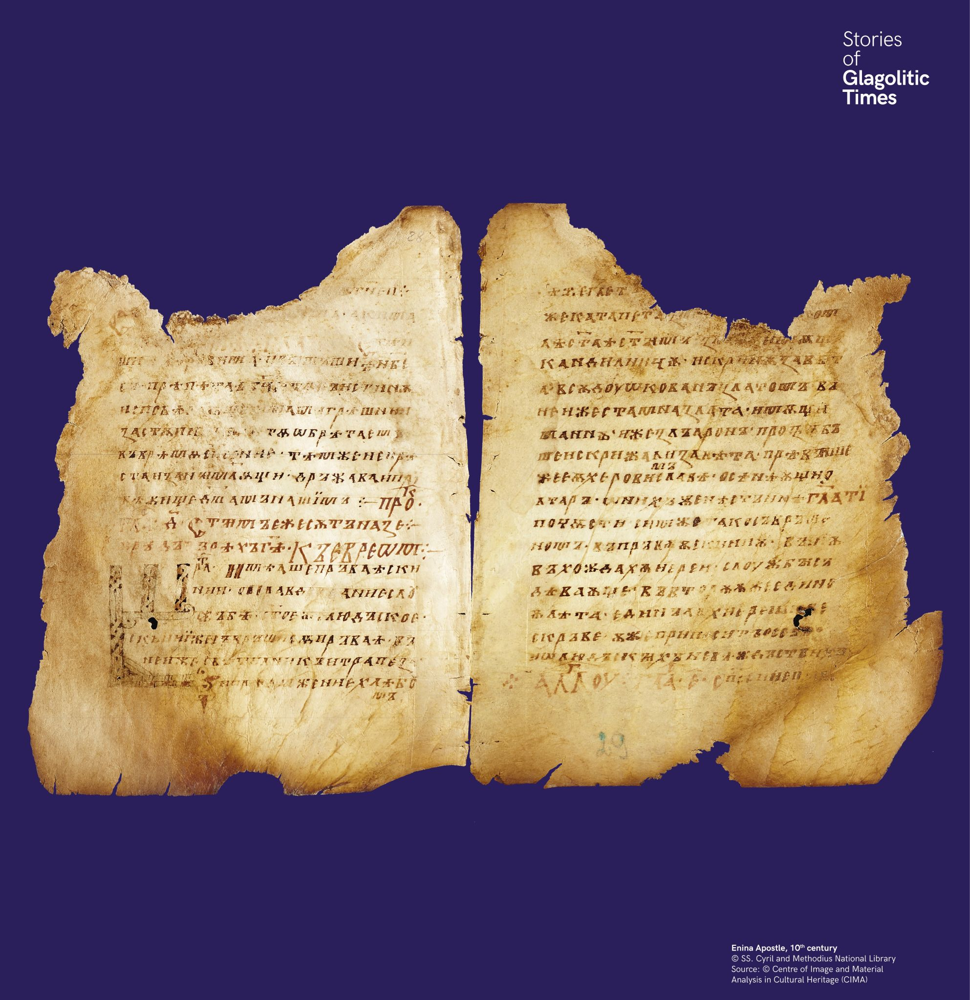

Eninai apostolos könyv
A régebbi ábécé nyomait cirill kéziratokban is megtaláljuk. Az Eninai apostoloskönyvben a „B” iniciálét glagolitával írták le: Ⰱ.


A régebbi ábécé nyomait cirill kéziratokban is megtaláljuk. Az Eninai apostoloskönyvben a „B” iniciálét glagolitával írták le: Ⰱ.
Следи от по-старата азбука се откриват и в кирилски ръкописи. В Енинския апостол инициалът „В“ е написан на глаголица: Ⰱ.